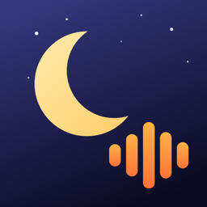

Snore Detect
Find out when and how much you snore
Support
Snore Detect listens through the night and marks every stretch of snoring. In the morning it shows how long you snored, when it happened and how loud it was, and you can play any episode back. Everything happens on your iPhone. Audio is never uploaded.
Need help? Email zybler@gmail.com. Please include your iPhone model and iOS version.
Getting started
- At bedtime, open Snore Detect and tap Start Recording. Allow microphone access the first time.
- Put your iPhone on the bedside table, within about a metre of your head, and plug it in.
- Lock your iPhone, or tap Dim Screen for a dim clock. Recording continues with the screen locked.
- In the morning, tap Stop to see your night's report: total snoring time, share of the night, episodes, snore count, your longest snore-free stretch and a loudness chart.
Common questions
It missed some snoring, or counted other sounds as snoring.
Change Settings › Sensitivity. High also catches soft snoring or a phone placed farther away. Low only counts clear, loud snoring, which helps if a fan, pet or traffic is being mistaken for snoring. Keeping the phone close to your head helps most of all.
Can it tell who is snoring?
No. It hears everyone in the room, so a snoring partner or pet will be counted too.
Does it work with white-noise or sleep-sound apps?
Yes. Snore Detect mixes with other apps' audio and keeps their Bluetooth output, so you can keep using them.
How much battery and storage does it use?
Listening all night uses some battery, so keep your iPhone on its charger. Saved audio takes about 11 MB an hour (roughly 90 MB a night). To save space, turn off Settings › Save Audio (snoring is still detected, you just can't play it back), or delete old audio in Settings or from a night's report.
A phone call interrupted my recording.
Snore Detect resumes after calls, Siri and audio interruptions. If a call comes in while your iPhone is locked, iOS may not let it restart the microphone in the background. Recording then resumes the next time you open the app, and the report shows the gap.
The app was closed during the night.
Progress is saved every minute. If iOS closes the app overnight, the night is recovered the next time you open it, minus at most the last 10 minutes of audio.
Is my audio uploaded anywhere?
No. Snore Detect has no account and no servers, and it doesn't send anything over the internet. Audio is analysed on your iPhone with Apple's built-in sound classifier. See the Privacy Policy.
Does Snore Detect diagnose sleep apnoea?
No. Snore Detect is not a medical device and doesn't diagnose any condition. Loud, frequent snoring, especially with pauses in breathing or gasping, can be a sign of sleep apnoea. If that sounds familiar, talk to a doctor.